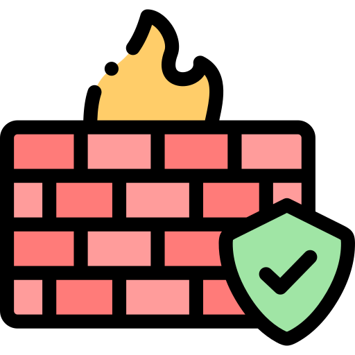
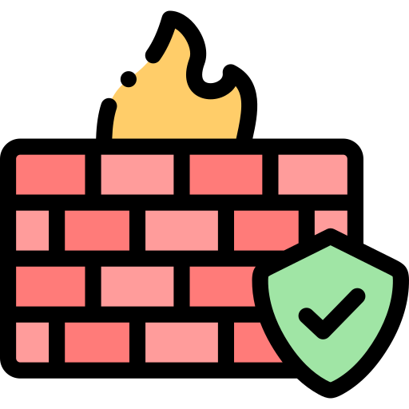

Dilip Siddalingha Prasad
Cybersecurity Professional
 Education
Education
I built a strong academic foundation that paved the way for my career in cybersecurity.
-
The George Washington University, School of Engineering & Applied Science
Master of Science in Cybersecurity in Computer Science, Washington, DC – May 2025
Coursework: Computer Security, Network Security, E-Commerce Security. -
Visvesvaraya Technological University
Bachelor of Engineering in Computer Science, Bengaluru – July 2022
Coursework: Data Structures, Computer Networks, Operating Systems.
 Technical Skills
Technical Skills
An ever-evolving skill set that adapts to the dynamic challenges of the cyber world.

 



 Licensures & Certifications
Licensures & Certifications
The following licensures and certifications validate my expertise and commitment to cybersecurity excellence.
- Amazon Web Service - AWS Academy Cloud Security Builder.
- Amazon Web Service - AWS Academy Cloud Security Foundations.
- Social & Behavioral Research from CITI Program.
Projects
My projects showcase a blend of innovation, technical expertise, and a proactive approach to cybersecurity.
Cloud Security Assessment
Conducted a vulnerability assessment using AWS Inspector and Azure Security Center. Simulated attacks and implemented security controls—such as network segmentation, IAM, and encryption—to reinforce cloud security protocols.
Network Traffic Analysis & IDS
Developed an IDS using Snort and Python to analyze real-time traffic and detect anomalies. Created custom rules and logged alerts for proactive intrusion prevention.
Web App Penetration Testing
Performed penetration testing on a custom-built web application using OWASP ZAP and Burp Suite, focusing on SQL injection, cross-site scripting (XSS), and authentication weaknesses. Documented findings and delivered a comprehensive remediation report.
Automated Vulnerability Scanning
Developed a Python tool integrated with Nessus to automate vulnerability scanning and generate prioritized reports, streamlining the security response process.
Work Experience
I have held several key roles where I applied my cybersecurity expertise to enhance operational security, educate future professionals, and drive process improvements.
-
Follett Corporation - Certified Apple Technician
(Washington, D.C., March 2024 - Present)
Resolved software issues across iPhones, iPads, and MacBooks while optimizing performance and security. Applied cybersecurity best practices to mitigate data breaches, strengthen encryption, and reduce vulnerabilities by 30% through system hardening and threat analysis. -
The George Washington University - Graduate Teaching Assistant
(Washington, D.C., June 2024 - December 2024)
Led three weekly recitation sessions reinforcing cybersecurity principles related to mathematics and cryptography. Assisted students with problem-solving, graded assignments, and provided individualized academic support. -
Clifford Chance - Security Intern
(Remote, August 2020 - January 2021)
Directed password strength assessments using Hashcat and Hydra, identifying weak credentials in Active Directory, web apps, and remote services (SSH, RDP, FTP). Executed brute-force and dictionary attacks, analyzed hash algorithms, and delivered security reports to enhance password policies and enforce MFA by 25%.